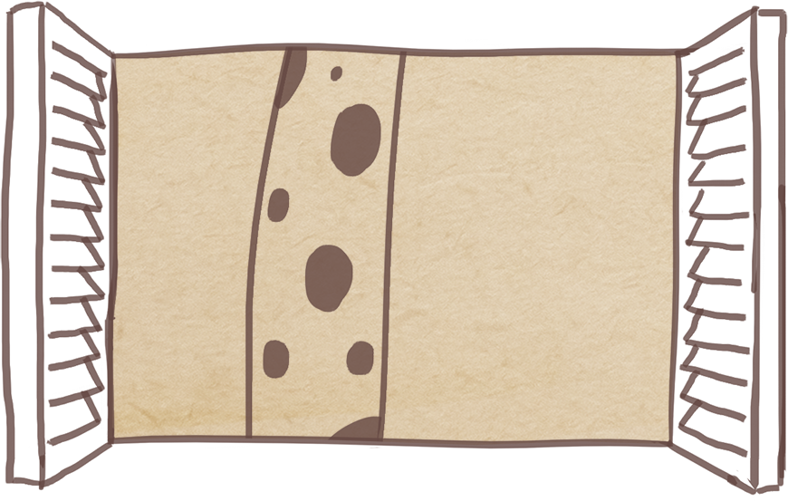
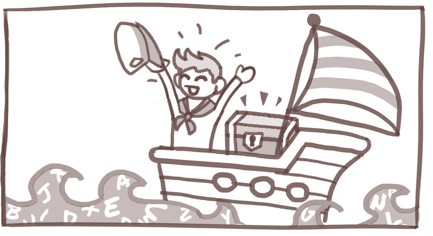

Mapa do Projeto
Você recebeu o Mapa do Projeto. Em cada ponto deste mapa existe um desafio relacionado à elaboração de um projeto de pesquisa.
Para avançar, é preciso resolvê-los. Conforme o mapa é preenchido, você visualiza seu progresso. Se chegar ao tesouro, você ganha um baú repleto de barras de ouro.
Pronto para começar?
A elaboração de um projeto de pesquisa científica é como um mapa: é preciso seguir algumas coordenadas para se chegar ao tesouro! Ops, ao projeto. Uma pesquisa bem-sucedida está diretamente ligada a um projeto de pesquisa bem definido. Algumas etapas são necessárias para estruturar adequadamente o projeto, e um bom marinheiro sempre tem os instrumentos e os recursos certos para chegar com sucesso ao seu destino final.
Ao longo do mapa, você verá quais são os pontos aos quais precisa se atentar ao elaborar o seu projeto. Cada etapa, um desafio. Pronto para embarcar nessa jornada? Então, vamos lá!
O primeiro ponto é: você sabe o que é um tema de pesquisa?

|

|
|---|

O ponto final parece estar distante, mas a luneta irá auxiliá-lo a observar ao longe. Se você já tem um tema de pesquisa, use-a para observar se ele está adequado aos seus objetivos. Se ainda não tem, use-a para explorar o ambiente e, assim, identificar e definir seu tema de pesquisa. Neste momento, guarde essas palavras: INDAGAÇÃO – CONHECIMENTO – CURIOSIDADE.
Falando nisso, que você vê na janela abaixo?

A bússola é um instrumento de navegação que indica o norte magnético. Quando dizemos que “precisamos de um norte”, é essa a ideia: precisamos saber aonde queremos chegar e seguir por esse caminho. A fundamentação teórica, ou base científica, é o que vai sustentar o projeto de pesquisa. Quais teorias serão utilizadas para embasar seu estudo? Que autores você irá ler para explorar o que já foi discutido a respeito do seu tema de investigação?
Você consegue identificar qual é a definição que completa corretamente os conceitos a seguir?
|
Definição da linha teórica e autores que serão utilizados para construção da pesquisa.
|
|
| Levantamento bibliográfico sobre o que já se pesquisou ou se tem pesquisado a respeito de determinado tema. | |
|
Fundamentação teórica
|
|
|
Estado da Arte
|
A construção organizada e sistemática do projeto passa pela “amarração” das ideias, objetivos, metodologia e fundamentação teórica.
Quando tudo está relacionado, o projeto de pesquisa fica claro para quem lê. Um projeto bem estruturado tem mais chances de ser aprovado em agências de fomento à pesquisa e universidades.
Lembre-se: o projeto é um documento escrito. Portanto, a linguagem utilizada deve ser clara e estar de acordo com as normas ABNT.
Observe as citações abaixo e correlacione as colunas:
1. Citação direta (CD) 2. Citação indireta (CI) 3. Citação de citação (CC).
Severino (2006) aponta que “quando se pede o resumo de um texto, o que se tem em vista é a síntese das ideias do raciocínio e não a mera redução de parágrafos. ” (p.124).
Minicucci (1987) define seminário como o lugar onde germinam as ideias lançadas.
Segundo Warde (1990), apud Alves-Mazzotti (2003), o conceito de pesquisa se ampliou tanto que hoje tudo cabe: “os folclores, os sensos comuns, os relatos de experiência, para não computar os desabafos emocionais e os cabotinismos. ” (p.45).
Umberto Eco (2008) esclarece em sua obra Como se faz uma tese, que existem alguns tipos de fichamento. Vamos focalizar dois tipos importantes: o fichamento bibliográfico e o de leitura.
O farol ajuda o navio a se orientar pelo mar. Por meio da sua luz, os faróis apontam a entrada de portos, presença de recifes, existência de bancos de areia, dentre outras situações. Da mesma forma, a definição metodológica instrumenta o pesquisador quanto aos procedimentos que serão aplicados na pesquisa.
Selecione o procedimento metodológico que representa uma pesquisa de abordagem qualitativa:
Escrever é como navegar. Às vezes o mar está tranquilo e a escrita flui rapidamente. Em outros momentos, de maré agitada, as palavras parecem não sair da forma como imaginamos. Isso é comum e você não deve se preocupar nos momentos em que a escrita do projeto parece não evoluir. Procure reler seus objetivos, o problema de pesquisa, a justificativa: lembre-se de que tudo deve estar conectado. E, o mais importante: leia muito. Leia os autores que selecionou para compor a fundamentação teórica, leia como eles abordam o tema e como eles defendem suas ideias em seus textos.
Escrever um projeto de pesquisa não é fácil, mas já diz o ditado: “mar calmo nunca fez bom marinheiro”.

Para buscar um tesouro, é preciso passar por várias etapas: preparar o barco e a equipe, ajustar as velas e o timão para chegar ao seu destino, guiar-se pelos faróis e mapas...
A elaboração de um projeto de pesquisa também é assim: necessita passar pela escolha do tema, definição teórica e metodológica, organização de ideias e escrita sistemática.
Ao fim de ambas as jornadas, você será recompensado – seja com um baú de barras de ouro ou com um projeto que comunique ao mundo suas ideias e contribuições científicas.
